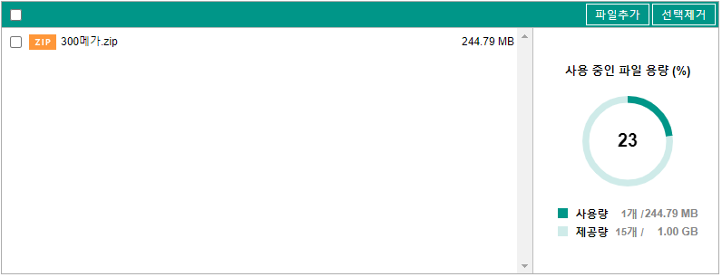
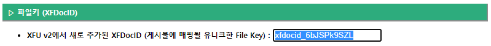
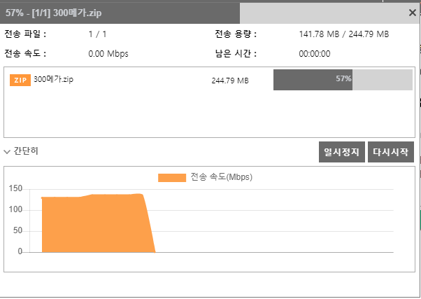
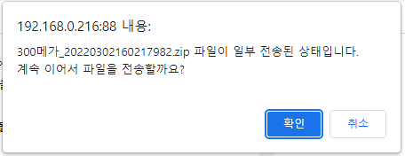

파일 이어서 전송
설명
X-Free Uploader는 파일 전송 도중에 전송이 중지되었던 파일을 이어서 전송 가능합니다.
해당 조건
200MB 이상 파일
에서만 해당 기능이 동작되며 기준 용량은 관리자에 의해 변경이 가능합니다.
이어서 전송 기능을 위해선 파일전송 시
파일키 (XFDocID)
정보가 필요합니다.
이어서 전송 시도할 때
파일키 (XFDocID)
정보가 일치하다는 전제 하에 중단되었던 파일의 이어서 전송이 가능합니다.
테스트 절차
▼
1) [파일추가] 버튼 눌러
200MB 이상의 파일
을 첨부추가 합니다.

2) [파일전송] 버튼을 눌러 파일을 업로드 합니다.
전송된 파일이 저장되는 Unique한 폴더명 = "파일키 (XFDocID) 값
※ 업로드 하기 전에 샘플화면 상에 보이는 파일키 (XFDocID) 값을 복사합니다.

3) 파일이 전송되는 도중에
[일시중지] 버튼을 눌러 업로드를 일시 중지
시킵니다.

4-1) 이어서 전송 Case 1 :
전송중지된 상태에서 전송 창을 닫지 않고 바로 이어서 전송할 경우
해당 전송창에서 [다시시작]버튼을 누르면 일시 중지했던 파일을 바로 이어서 전송이 진행됩니다.

4-2) 이어서 전송 Case 2 :
전송 창을 닫고 페이지를 새로 고침한 경우
이전에 복사했었던 파일키 (XFDocID) 값을 아래 파일키 (XFDocID) 값 정보에 붙여넣기합니다.
전송중지 했었던 동일한 이름의 파일을 다시 [파일추가] 버튼 눌러 선택하여 첨부추가 합니다.
[파일전송] 버튼을 누르면 다시 전송할지 안내 메시지가 보여지고 [확인]을 누르면 이어서 전송이 진행됩니다.
5) 파일키 (XFDocID)
해당 샘플화면에서 보여지는 파일키 (XFDocID) 정보는
화면이 새로고침될때마다 정보가 Random으로 변경되어 자동으로 세팅
됩니다.
(X-Free Uploader가 제공하는 onLoad 시점에서 getRandomFileKey함수 사용)
파일전송 진행시
onBeforeSubmit 이벤트 시점
에서 X-Free Uploader가 제공하는
setDocID함수를 적용
하여 해당 파일키 정보가 세팅되어 진행되는 구조 입니다.
해당 파일키가 지정되지 않으면 기본적으로 파일키 정보는 "xfdocid_0000000000"로 세팅되어 /xfdocid_0000000000 폴더에 파일이 업로드됩니다.
※ "/xfdocid_0000000000" 폴더에 파일이 업로드되더라도 이어서 전송 기능은 가능하나 해당위치가 유니크하지 않기에 불특정다수의 업로드가 발생시 일부 파일들의 컨트롤이 충돌되어 원하지 않는 동작이 발생될 수 있습니다.
▷ 파일키 (XFDocID)
XFU v2에서 새로 추가된 XFDocID (게시물에 매핑될 유니크한 File Key) :
▶ 파일 업로드
▷ 관련 컨트롤
파일추가
선택제거
전체선택제거
파일전송
파일 이어서 받기 페이지 이동